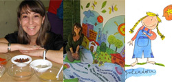

:: Sitio web de Roberto Gutiérrez durante mi etapa como diseñador gráfico en Kale Dor Kayiko
"Soy diseñador gráfico. Durante aproximadamente 6 años trabajé en Kale Dor Kayiko". En esta etapa creé esta web.
Roberto Gutiérrez
 "¿Cómo se llama...
"¿Cómo se llama...
'ese payo que dibuja'?...
Un día estabamos en la oficina y la mujer de uno de mis compañeros de trabajo me dijo:
—"Sabes, Rober..., cuando no me acuerdo de tu nombre... le pregunto a mi marido:
'¿Cómo se llama... ese payo que dibuja?'"...
De alguna manera, así surgió esta web:
;) Gracias, Victoria

Bilbao. País Vasco.  Más información: Wikipedia/Bilbao.
Más información: Wikipedia/Bilbao.
Fotografías: Arriba: Obra de Daniel Buren situada sobre el propio puente La Salve - Museo Gugghenhein Bilbao. Fotografía original: Flickr - josu.orbe. Derecha: Obra de Daniel Buren "modificada" con Photoshop para este sitio web.
¿Quién soy?
¿y a qué me dedico?
- Ilustración,
diseño gráfico
y creación de contenidos multimedia
Durante una etapa en mi vida he sido también diseñador web.

Ilustraciones pertenecientes a mi etapa en Kale Dor Kayiko
En mi puesto de trabajo en Kale Dor Kayiko.
Incluso en la parte de diseño web, creo que mi trabajo se acercaba más a la creación de contenido multimedia (abajo podrás ver algún ejemplo).

Mi mesa de trabajo en
Kale Dor Kayiko.
El carromato gitano lo compré en una tienda de juguetes de Bilbao. Lo restauré. No estaba a la venta. Estaba en el escaparate y estaba un poco deteriorado...
Aquí tienes un pequeño resumen:


Ilustración publicitaria
Ilustración técnica
El monte prohibido
Libro para KDKolorear
Carteles
Trípticos
Portadas de libros
Portadas de revistas...
| Ilustración editorial |


Retoque digital
Calendarioss
Chapas
Cuadernos
Bolsas de tela
Marca-páginas
| Merchandising |


E-learning
Animación
Pre-loader
Intro
Kerandoj
Nafsa
Selzi

Portafolio:
10 trabajos que te pueden dar una idea de qué es lo que hecho y quién soy
 1- Semáforo
1- Semáforo
Un cargando (loader) realizado en Flash en el 2005.
Por si podía servirle de alguna utilidad a alguien realicé un pequeño tutorial sobre cómo está realizado.
 Ver el cargando y el tutorial...
Ver el cargando y el tutorial...
Nota: Eso sí, la parte de programación está en
ActionScript 1. A ver si un día de estos lo actualizo a ActionScript 3.
(¿ActionScript 3? Maravilloso, seguro, pero... anda qué!!)...


 3- El Hada de la Suerte.
3- El Hada de la Suerte.
No me gustaban demasiado las intros en las webs (a nadie nos gustaban: Por eso existía el 'saltar intro'), pero ésta intentaba cumplir un objetivo:
A la hada le falla la varita mágica. Pasa un momento de apuro, y es en ese instante que (creo yo) no puedes evitar empatizar con ella.
Al final tienes que elegir un sitio dónde ver los resultados de la lotería de esta semana o encargar décimos online:
¿Por qué no en el sitio web de esta simpática hada a la que, de vez en cuando, (y a quién no) algo no le sale del todo bien?
Nafsa se dedica al diseño, la fabricación y venta de todo tipo de electroimanes.
En Arco Comunicaciones diseñamos su web en el año 2000.

Los electroimanes están dibujados en Freehand: Una vez el catálogo había cargado -y cargaba rápido-, ver todos los electroimanes (uno a uno incluso si se quería), era muy sencillo*.
 Ver directactemente el catálogo...
Ver directactemente el catálogo...
[Abajo]...

Sitio web de Nafsa (año: 2004):
Catálogo web de Nafsa:
4- Animación ('banner'):'¿Buscas trabajo?'
Animación realizada en Flash, que utilizamos en el sitio web de Kerandoj para animar a los jóvenes gitanos y gitanas a emprender la búsqueda de una nueva orientación laboral, y que utilizamos en Jornadas y charlas en centros cívicos para explicar correctamente qué es Kerandoj (Ke-ran-doi).
 5- Sencilla animación técnica.
5- Sencilla animación técnica.
Pequeña animación, que formaba parte de una serie, para realizar una presentación técnica.
6- Selzi

primeros que 'empezaron a salir bien'. Ella se llamaba Garazi y tenía 11 años.
El segundo apunte (abajo) lo realizé en un curso de Dibujos animados que realizé en el Estudio de Animación Merlín de Bilbao. Se llamaba Ana y era una compañera de curso.


 8.2- Acuarela
8.2- Acuarela
Acuarela. Detalle. Puerto viejo de Getxo.
9- Ilustración editorial: El monte prohibido
El primer libro, y de momento el único, que he ilustrado. Editorial Palabra.

 10- Iniesta
10- Iniesta
Ilustración realizada en 2008 para una Asociación de Catalunya dirigida a ayudar a los niños y niñas con cancer

Una amiga ilustradora de Barcelona: Daniela Violi (El Book de Dani Violi - El efecto mariposa amarilla), coordinaba un pequeño proyecto de Libro para colorear que iba a tener a los jugadores del barça como protagonistas.
Pensé que para un niño o una niña pintarse a ellos y ellas mismas siendo 'salvados' por su jugador favorito, seguramente no les curaría, pero verse, dibujarse, "imaginarse", "sentir" que Iniesta estaba ahí con ellos y ellas tenía que ayudarles.
Humor
Declaración de Superman a Jesús Quintero:
(...)


 Grandes injustcias del siglo XX
Grandes injustcias del siglo XX
Para los más incrédulos aquí tenéis el documento gráfico.
Ocurrió, pero al día siguiente no pareció que ocurrió. Yo siempre he sido más partidario de Britney, la verdad. Pero sé reconocer una injusticia. Y esta fue de las más grandes del siglo XX. Yo lo siento, Christina. Lo siento mucho.
 Más información.
Más información.

 Sus satánicas majestades: Los Rolling Stones
Sus satánicas majestades: Los Rolling Stones
Que digo yo que esta "actualización" del logo clásico de los Rolling Stones no necesita, seguramente, ni más explicaciones, ni muchos más comentarios. Si acaso quieres añadir el tuyo...
Y que hablando de sus satánicas majestades, ahí va un pequeño comentario sobre la Semana "Santa".
Que un abrazo a Sevilla; que lo uno no quita lo otro, creo yo.


 No obstante...
No obstante...
Yo, la verdad, siempre he creído que éste era un chiste claramente feminista. Y, normalmente se lee así. No obstante siempre hay alguien que me sorprende (a lo mejor tienen razón), diciéndome que no lo es. Si quieres deja tu opinión.
Escribe aquí tu opinión....
Eso sí, personalmente es uno de mis chistes favoritos.
;)

Lewis Hamilton
2007: EL PAÍS: La grúa de la discordia - 20 MINUTOS: La FIA dice que la maniobra de la grúa es legal porque Hamilton no apagó el mortor - MARCA: La FIA debería sancionar a Hamilton por no salir del coche - 2008: ORANGE - DEPORTES: Las trampas de Hamilton en la F1 - SUITE101: Lewis Hamilton o las ventajas de saltarse las normas - ANTONIO LOBATO: "-Ah, pero... ¿esto se puede hacer?... - Escribe aquí tu opinión...
::/ Athletic:


 Ánimo Gurpe!!!!
Ánimo Gurpe!!!!
Que alguien pueda pensar que un jugador como Gurpegi se dopó, es como mínimo "sorprendente"; creo yo
¡Gabarra, ya!
Athletic femenino. Año de fundación: 2002. Superligas: 2002-03 / 2003-04 / 2004-05 / 2005-06 / 2006-07
 Más información (Wikipedia)...
Más información (Wikipedia)...
Fotografía: La "Gabarra" recorriendo el río Duero. Ahí va...
Flickr - Autor: rahego ;)

 -"Abuelito... ¡¡Clara ya anda!!"
-"Abuelito... ¡¡Clara ya anda!!"
 Ver el capítulo 48 de Heidi en Youtube (parte II): Clara se pone de pie. Versión TV.
Ver el capítulo 48 de Heidi en Youtube (parte II): Clara se pone de pie. Versión TV.
NOTA: Sí digo por otro lado, que para mí Heidi es una obra maestra de la televisión.
Escribe aquí tu opinión...


CV
::/ Experiencia laboral:
Actualmente:
 |
Visita la web de mi nuevo proyecto: Los micormachismos de Luis Bonino... |
2008 - 2013: Diseñador gráfico en Kale Dor Kayiko
Desde el 2008, si bien no siempre de forma continuada, diseñador gráfico de Kale Dor Kayiko
2005: E-learning en Redox
Diseñador gráfico en la empresa de e-Learning Redox de Las Arenas (Bilbao), realizando ilustraciones y animaciones en Flash para proyectos educativos on-line.
- Curso de Patrón de Embarcaciones de Recreo (PER)
- La negociación como creación de valor. Consultores - DTI
Diseñador gráfico en la empresa Artevía de Balmaseda participando en la realización de cursos de e-Learning.
2001 - 2003: Diseñador gráfico y web en Arco Comunicaciones
Diseño gráfico y web en la empresa de Bilbao: Arco Comunicaciones.
NOTA: Arco Comunicaciones cerró en el año 2004.
::/ Formación académica (Dibujo y pintura):

Escuela de Dibujo del Museo de Reproducciones Artísticas de Bilbao.
c/ Conde Mirasol, 8. Bilbao. Bizkaia (Foto: Google Maps).
Escuela de Dibujo del Museo de Reproducciones Artísticas de Bilbao
- 1994 - 2001.
Curso de Dibujos Animados en el Estudio de Animación de Bilbao Merlín.
- 550h.

Escuela de Dibujo Arrieta de Bilbao
- 1992 - 2002.